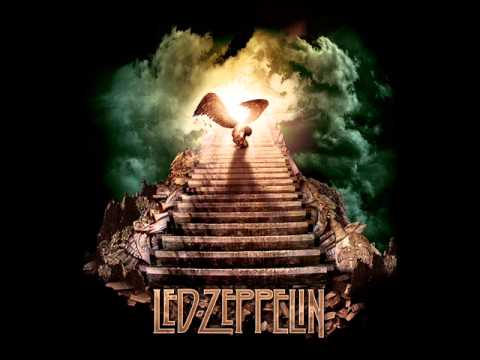

Led Zeppelin (МФА: [lɛd ˈzɛpəlɪn]) — британская рок-группа, образовавшаяся в сентябре 1968 года в Лондоне, Англия, и признанная одной из самых успешных, новаторских и влиятельных в современной истории[2]. Создав собственное звучание (для которого были характерны утяжелённый гитарный драйв, оглушающее звучание ритм-секции и пронзительный вокал), Led Zeppelin стали одной из ведущих групп хард-рока[3], сыграли основополагающую роль в становлении хэви метал[1][4][5], свободно интерпретируя фолк- и блюз-классику и обогащая стиль элементами других музыкальных жанров (рокабилли, рэгги, соул, фанка, кантри)[6]. Именно Led Zeppelin (согласно Allmusic), отказавшись от выпуска синглов, заложили основу понятия «альбомный рок»[3].
Led Zeppelin остаются одной из наиболее успешных групп в рок-музыке: общемировой тираж их альбомов превышает 300 миллионов[7][8][9], 112 миллионов было продано в США (четвёртое место)[10]. Семь альбомов Led Zeppelin поднимались на вершину Billboard 200.
Led Zeppelin занимают первое место в списке VH1 «100 Величайших артистов хард-рока»[11]. Журнал Rolling Stone признал их «самой тяжёлой группой» и «лучшей группой 70-х»[12]. В 1995 году Led Zeppelin были введены в Зал славы рок-н-ролла, в 2005 году получили Грэмми за выдающийся вклад в музыкальное развитие (англ. Grammy Lifetime Achievement Award)[2], в мае 2006 года — Polar Music Prize, музыкальный аналог Нобелевской премии[7].

Джимми Пейдж (англ. Jimmy Page, полное имя Джеймс Патрик Пейдж, англ. James Patrick Page; 9 января 1944, Хестон, Лондон) — британский рок-музыкант, аранжировщик, композитор, музыкальный продюсер и гитарист-виртуоз, стоявший у истоков Led Zeppelin и до самого конца оставался музыкальным «мозгом» группы. До этого был известен как сессионный гитарист и участник The Yardbirds (c конца 1966 до 1968 года).
Узнать больше
«Stairway to Heaven» (рус. Лестница на небеса) — песня британской рок-группы Led Zeppelin, выпущенная на альбоме Zoso.svg (также известен как Led Zeppelin IV). Композиция также вошла в концертный альбом The Song Remains the Same. Авторы песни — гитарист группы Джимми Пейдж и вокалист Роберт Плант. Эта песня стала одной из самых знаменитых композиций Led Zeppelin и рок-музыки вообще, а также самой часто проигрываемой композицией на FM-радиостанциях Америки. Между тем, она даже не была выпущена как сингл, а рекламное EP-издание для радиостанций вышло только в 1972 году. Как сингл песня вышла лишь в 2007 году и заняла в хит-параде Британии 37-е место.

Песня состоит из нескольких фрагментов: фолкового вступления и тяжёлого хард-рокового проигрыша. Фолковое вступление напоминает композицию 1968 года «Taurus» группы Spirit. Узнать больше